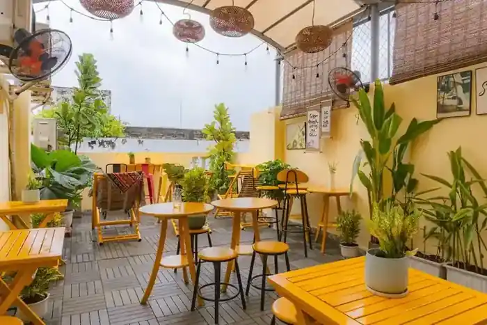
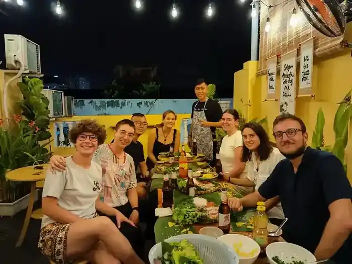
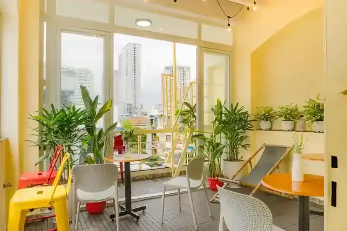
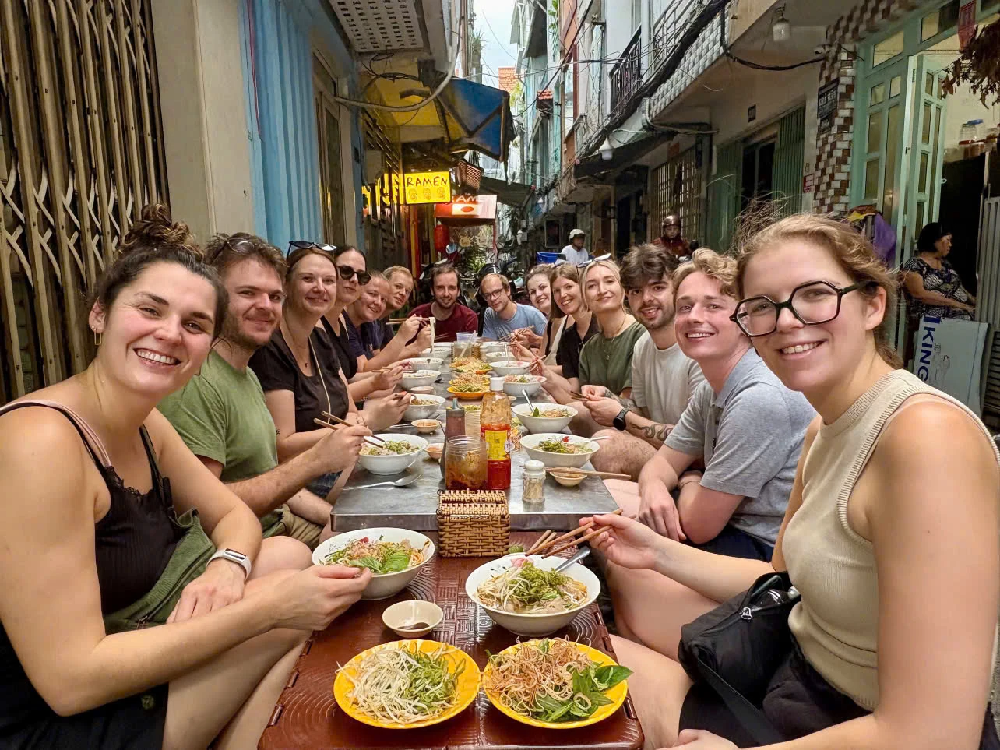
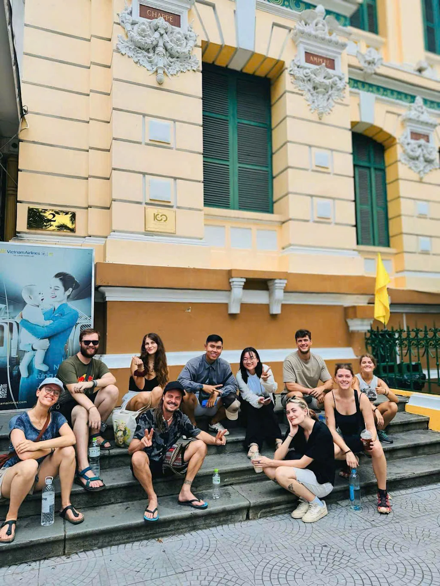
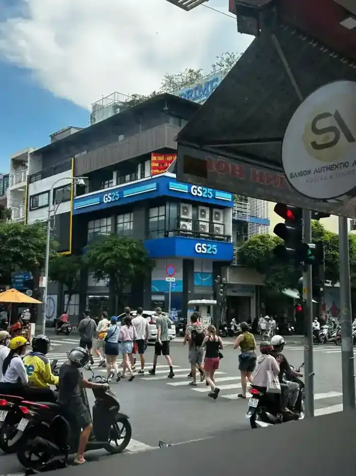

Dorms
Social & practical
Air-conditioned dorms with curtains, personal lights, outlets and lockers.
Explore Dorms
A social stay just minutes from downtown — with clean rooms, free breakfast, rooftop vibes, a gym and experiences that get you into the city.
Saigon Authentic is designed for travelers who want the convenience of central Ho Chi Minh City without staying inside the busiest tourist bubble.
Sleep in a clean, comfortable room, start with breakfast, explore the city, then come back to a rooftop where it is easy to meet people without the pressure of a party hostel.

Air-conditioned dorms with curtains, personal lights, outlets and lockers.
Explore Dorms
Private rooms for couples, friends and travelers who want more privacy.
Explore Private RoomsSend your dates and group size. We will show you the best current options.
Ask on WhatsApp


Breakfast conversations become city plans. A rooftop drink becomes a group dinner. The best hostel moments usually happen between the itinerary.
Explore Hostel LifeGet oriented with landmarks, streets and stories beyond a checklist.
Eat your way through the city with local dishes and neighborhood stops.

Classic day trips can be arranged directly from the hostel.
Stay in the District 4 area, where local cafés, street food and everyday city life sit just outside the hostel — while downtown remains close by.
See Our LocationBooking is simple: message us directly on WhatsApp for current availability, room options and rates.